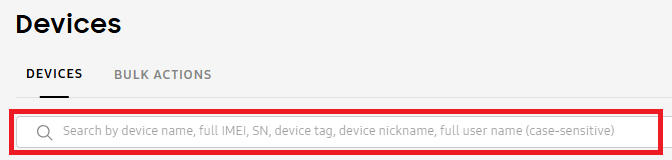

View devices
Last updated June 17th, 2026
The Devices page lets you view and manage your tenant’s devices, including device details, tags, and nicknames. For more information on managing device tags and nicknames, see Manage device nicknames and tags.
On the Devices page, the DEVICES tab opens by default. From here, you can customize your view of devices in the device table, organize your fleet with platform filters, or select a device to see more details.
You can also search for a device by its name, full IMEI, device tag, device nickname, or full user name.

Customize the device table
You can customize the device table by selecting which columns you want to display. To do this, click (More actions icon), then select what columns to display. By default, the Device name and Status columns are always displayed. You can select up to six additional columns to view at a time, then click SAVE CHANGES.
The following columns are available:
| Column | Description |
|---|---|
| Device name | The device's name in your tenant as set by Knox Manage. If you set a nickname for the device to make it more easily recognizable, it also displays here. You can create and edit a device's nickname under its details. |
| Status |
The state of the device's connection to the Knox Manage server. Devices can have the following statuses:
|
| Last seen |
The last time the Knox Manager server could communicate with the device. This updates each time any of the following events occur:
|
| Serial number | The serial number of the device. |
| IMEI | The unique International Mobile Equipment Identity (IMEI) number for the device. If the device supports two SIMs, only the primary IMEI is shown unless you hover over (Info icon). |
| User name | The name of the user to whom the device is assigned. |
| Platform |
The platform of the device. Android is selected by default, but you can select another platform or clear the filters to view non-Android devices. To manage non-Android devices, you must go to the original console. Available options:
|
| Management type |
The management type for the device. Fully-managed, Work profile, Work profile on company-owned device types are selected by default, but you can select other platforms or clear the filters to view devices with a different management type. To manage devices with a different management type, you must go to the original console. Available options:
|
| Status last updated | The last time the device's status was updated. |
| Enrollment type |
The method that was used to enroll the device. Available options:
|
| Device tags | The custom identifiers that allow you to categorize your devices. You can add or edit a device's tags under its details. |
| Mobile number | The mobile number assigned to the device. |
| Model | The device's model name. |
| OS version | The OS version that the device is running. |
| Issues |
Any incomplete actions or policy violations on the device. Available options:
|
| Firmware version | The software version that controls the hardware components on the device. |
| Manufacturer | The device's manufacturer. |
| MAC address | The unique alphanumeric sequence connected to the hardware component which identifies the device when it connects to a network. |
| Agent version | The version of the Knox Manage agent that is running on the device. |
| Profile | The profile or profiles assigned to the device. Only one profile is displayed at a time. Hover over a profile name to view all the assigned profiles. |
| Last device action | The last action that an admin completed on the device. |
| Lock status | Specifies if the device is locked or unlocked. |
| ICCID information | The Integrated Circuit Card Identification (ICCID) on the device's SIM, a unique identifier which helps it identity itself when connecting to networks. |
| Roaming | Specifies if a cellular data connection is allowed while the device uses a roaming service. |
| IP address (Mobile) | The device's IP address if it's SIM-based. |
View device details
If you want to view more information about a device, you can view the device details.
To view the details of a device:
- Go to the Devices page.
- Click the name of the device you want to view.
- The device details sliding panel opens.
At the top, you can see the device’s Status and when it was Last seen. Statuses tell you the state of a device’s connection to the Knox Manage server. The Knox Manage server maintains information on when it was last able to communicate with each device. That time is recorded as the device’s Last Seen property.
Additionally, the sliding panel displays the following tabs:
- SUMMARY (displays by default)
- DEVICE INFORMATION
- SECURITY
- NETWORK
- LIBRARY
- PROFILE
Read the sections below to learn more about the information included in each tab.
Summary
The SUMMARY tab provides an overview of the device’s standing in your Knox Manage tenant.
At the top, you can click VIEW DEVICE LOG to open the device log for this specific device. Alternatively, you can also access this page from the ACTIONS drop-down on the Devices page.
On the Device log page that opens, there are several tabs related to the history and status of the device.
-
DEVICE ACTIONS — Displays logged entries for all device actions. To learn more details about a log event, click on View details. The Log details page opens, showing additional details such as the severity level and process information. To view the process info for each audit event, click View details.
-
DEVICE STATUS — Displays the history of statuses the device has had.
-
DIAGNOSTICS — Displays device diagnostics. To collect the diagnostics log for a given device:
- Select the device on the Devices page.
- From the ACTIONS drop-down menu, click Perform action on device > DIAGNOSTICS > Collect device diagnostics log.
To download a log event, select a file, then click DOWNLOAD LOG FILE, or just click DOWNLOAD LOG FILE to download all log events as .txt file to your device.
To view logs of all devices at once, go to the Device logs page. See Review device logs for more information.
-
Device nickname — Enter or edit the device’s nickname. Device nicknames are customizable identifiers to help you better organize your enterprise fleet with recognizable, readable names for each device.
-
Device IMEI — The unique International Mobile Equipment Identity (IMEI) number for the device. If the device supports two SIMs, then both appear.
-
Device SN — The device’s serial number.
-
Platform — The platform of the device.
-
Management type — The management type of the device.
-
User name — The name of the user that the device is assigned to.
-
User groups — The number of user groups that the device belongs to. Click the number to see a list of all associated user groups.
-
Directory group — The number of directory groups that the device belongs to. Click the number to open a page of all associated directory groups.
-
Device group — The number of device groups that the device belongs to. Click the number to see a list of all associated device groups.
-
Organization — The organization that the device belongs to. Organizations are hierarchical structures created in the original console used to manage resources like users.
-
Mobile number — The mobile number associated with the SIM on the device.
-
License — The Knox license associated with the device.
-
Enrollment type — The method that was used to enroll the device.
-
Tags — Add or delete tags associated with the device. Tags are custom identifiers that allow you to categorize your devices. Separate entries by commas.
-
Status last updated — The date and time when the device’s status last changed.
-
Device details last updated — The date and time that the device’s details last changed.
-
Location last updated — The date and time when the device’s location last changed. To view this information, you must have the Android Enterprise Location settings policy enabled. The recorded location history for the device begins after you set this policy.
To view the history of the device’s locations, click View device location. On the page that opens, set the Date range to filter the period you want to see location updates from. The map displays the current location of the device, represented by a dot. Hover over a dot to see general details about the associated device.
If you want to download the location data, go to the ACTIONS drop-down and select Download as XLSX or Download as GPX.
Device information
The DEVICE INFORMATION tab displays basic information about the device.
BASIC INFO
- Agent version — The version of the Knox Manage agent that is running on the device.
- Model — The model of the device.
- Manufacturer — The device’s manufacturer.
- OS version — The OS version running on the device.
- Firmware version — The software version that controls the hardware components on the device.
- Android security patch level — The date the last Android security patch was installed on the device.
- Memory — The storage capacity (in GB) currently in use.
- Battery used — The percentage of battery life remaining on the device.
- Ram memory used — The RAM capacity (in GB) currently in use.
- External SD card used — The amount of data (in GB) consumed on the device.
- Permitted external SD card ID — An ID number related to the occupied SD card slot.
- AP type — The type of access point that the device is connected to, allowing it to access networks.
- AP speed — The speed that data is transferred between the device and the access point.
- Modem firmware — The software version that controls the hardware components on the modem.
- Build type — The type of build that the device is designed for, such as a user, or production, build or a debug build.
- Knox Manage device ID — The device’s ID, a unique identifier for Knox Manage devices.
DATE AND TIME
- Time zone — The time zone the device is set to.
- Device time — The date and time the device is set to.
- Time formatting — Specifies whether the time on the device is based on a 12-hour or 24-hour clock.
- Date formatting — Shows how the time, day, and year information is displayed.
- Daylight savings time — Specifies whether the device is in daylight savings time or standard time.
- Automatic date/time — Specifies if an Android device has the Automatic date and time setting enabled. This setting uses network information to automatically update the date and time if the device user travels to a new time zone.
SDK
- Samsung Knox SDK — The Samsung Knox SDK version.
- Samsung Knox SDK license issued — The date and time the Samsung Knox SDK license was issued.
- Samsung Knox SDK license expired — The date and time the Samsung Knox SDK license expired, if the license has expired.
Security
The SECURITY tab displays several drop-down lists that provide information about the device’s security status.
UNENROLLMENT
- Unenrollment code — Send this to the device users if you want to unenroll their device, but it’s unable to connect to your network. For more information, see Unenroll and delete devices.
DEVICE AND SCREEN LOCK
- Lock device status — Specifies whether the device is locked or unlocked.
- Unlock code — The code that the device user can enter on their device if it’s locked because of profile settings or because an admin performed the Lock device action. For more information, see send device commands.
- Unlock mode — The reason the device was locked.
- Screen lock not compliant — If you allow the device user to set a custom password, this field specifies if their password doesn’t comply with the screen lock requirements you set. See Android Enterprise policies for more information.
- Screen lock failure count — The number of failed, consecutive attempts by the device user to unlock their device.
- Screen lock failure policy — If you allow the device user to set a custom password, this field specifies if you set the screen to lock when their password is non-compliant. See Android Enterprise policies for more information.
- Temporary password — The temporary password that the device user can enter on their device to reset their password. Temporary passwords are supported on devices running Android 7 or earlier.
KIOSK
- Kiosk mode status — Specifies whether kiosk mode has been enabled on a device.
- Kiosk package name — The autogenerated name for the kiosk pushed to the device.
- Exit kiosk code — The code that the device user can enter on their device to exit kiosk mode.
PROTECTION AND BIOMETRICS
- Compromised OS — Specifies if the device OS is compromised after you perform the Check for Compromised OS action.
- Play integrity — Specifies if the device passed the Play Integrity validation, and the evaluation type it received: DEVICE, BASIC, or STRONG. For more information on what each means, see the Android developer docs.
- Compromised — Specifies if any in-house apps assigned to the device are compromised.
- Fingerprint — Specifies whether fingerprint authentication is supported on the device.
- Iris recognition — Specifies whether iris recognition is supported on the device.
KNOX ASSET INTELLIGENCE
The data for this section is only available if you have deployed Knox Asset Intelligence to devices enrolled in your Knox Manage tenant. This deployment must be configured in the original console. See Deploy Knox Asset Intelligence for more information.
- SETTING — Specifies the Target Type selected in the Knox Asset Intelligence deployment.
- APP PERMISSION — Indicates whether automatic location tracking and notifications are enabled for devices, or if device users are allowed to choose these permissions.
- GROUP ID — The ID you set for a group of devices
KEEPALIVE
You can configure the keepalive settings to check the connection between the Knox Manage server and the device. The Knox Manage server checks the connection between the server and the device at the set interval. If the device doesn’t answer for longer than the time period specified in the keepalive configuration, its status changes to Disconnected. Currently, you can only enable and manage your keepalive settings in the original console.
- Keepalive — Specifies if you enabled keepalive.
- Setting — The target type set.
- Expiration — The expiration period (in days) set for keepalive. If there is no communication between the Knox Manage server and a device for the set period, it attempts to re-establish a connection directly. If the device still fails to establish communication, then its status changes to Disconnected.
- Lock screen upon expiration — Specifies whether you set the device screen to lock when a device’s status changes to Disconnected.
- Interval — The frequency (in hours) that the server checks the device’s connection status.
- Email for disconnected devices — Specifies whether email alerts are enabled to notify IT admins before devices disconnect.
- Send email before disconnection — Specifies the number of days before device disconnection when IT admin notification emails are sent.
PROFILE UPDATE SCHEDULE
With the profile update schedule, you can set a weekly schedule for the latest profile updates to apply to devices. Currently, you can set the profile update schedule in the original console only.
- Setting — The target type you set.
- Weekday — The days of the week when the latest profile updates are applied to devices.
- Start time — The time when the updates start applying to profiles.
- Time zone — The time zone that the schedule follows.
Network
The NETWORK tab displays details about the status of your network.
CONNECTIVITY
- Wi-Fi — Specifies whether Wi-Fi is enabled on the device.
- Mac address — The unique alphanumeric sequence connected to the hardware component, which identifies the device when it connects to a network.
- Wi-Fi status — Specifies whether a device is connected to Wi-Fi.
- Maximum Wi-Fi speed — Specifies the maximum link speed for your network as collected by the access point.
- IP address (Wi-Fi) — The fixed IP address assigned to a non-mobile device.
- IP address (Mobile) — The dynamic IP address assigned to the device by the cellular network it’s connected to.
- AP name — The type of access point that the device is connected to, allowing it to access networks.
- AP MAC address — The MAC address for the access point that the device is connected to.
- Wi-Fi transfer data — The user’s data consumption during uploads and downloads. This feature isn’t available on devices running Android 10 or later.
- Use Bluetooth — Specifies if the device is able to use Bluetooth.
MOBILE NETWORK INFORMATION
- SIM PIN applied by Knox Manage — The PIN for the device’s SIM.
- Network transfer data — The user’s data consumption during uploads and downloads. This feature isn’t available on devices running Android 10 or later.
- 5G network slicing — Specifies if the 5G Network Slicing policy is enabled. You can only enable this policy from the original console. See Android Enterprise policies to learn more.
- Roaming — Specifies if cellular roaming is enabled for the device.
- Number of calls — The number of calls that the device has received since it was enrolled in your tenant.
- Number of missed calls — The number of missed calls on the device since it was enrolled in your tenant.
- Multiple enabled profile — Specifies if the device can support two simultaneously SIMs on one eSIM chip. This feature is supported on devices running Android 13 or later.
SIM INFORMATION
- Telephone type — The telecommunication standard for the device, such as GSM or CDMA.
- Network type — Specifies if you selected a network type.
- IMSI — Displays the device’s International Mobile Subscriber Identity (IMSI), the unique code to identify the device users on a cellular network.
- ICCID information — The Integrated Circuit Card Identification (ICCID) on the device’s SIM, a unique identifier which helps it identity itself when connecting to networks.
- SIM type — The type of SIM, either Physical or Embedded.
- SIM status — The status of the SIM on the device.
- Mobile number — The mobile number associated with the device’s SIM card. <